Historia y evolucion de los sistemas operativos
Historia y evolución de todos los sistemas operativos creados hasta la fecha. Una lista cronológica de todos aquellos S.O. que vieron la luz, uno de ellos se quedaron entre nosotros, y otros que no tuvieron lo necesario para quedarse, en una época, donde todos querían ser el “popular” de los PCs.
Cada día que enciendes tu ordenador para trabajar, divertirte, navegar por la web, jugar y hacer muchas otras cosas. Unos segundos después de presionar el botón “power”, un componente muy importante entra en juego: el sistema operativo.
Hoy, el mercado está bien segmentado, pero mucha gente todavía usa Windows. Sin embargo, la historia no siempre ha sido así. Con los años, varias empresas han desarrollado sistemas para adaptarse a diferentes tipos de usuarios. Hoy, vamos a hablar un poco de estas tantas plataformas.
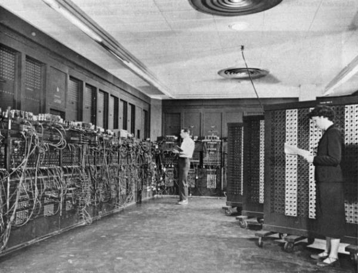
En el inicio la computación estaba sin forma y era vacía
Los ordenadores/computadoras gigantes que ocupaban cuartos enteros y que necesitaban la ayuda de los seres humanos nacieron por allí a principios de 1950. En los primeros, las tareas se llevaron a cabo por técnicos, los cuales dictaban lo que sería realizado a través del hardware.
Un empleado era contratado especialmente para activar y desactivar las llaves, la cuales servían para indicar si un componente debe estar encendido o apagado. Cuando se cerraba la llave, por ejemplo, la información corría por metros o kilómetros de cables y encendía una luz, indicando que determinada funciona estaba desactivada.
En aquella época, era común para una persona desarrollar programas de ordenador. A pesar de trabajar para las tareas necesarias, estos equipos siempre necesitaban de la intervención humana y no podían usar rutinas programadas.
1969 – UNIX
Estado: Disponible.
Código: Cerrado.
En la década de 1960, un equipo de desarrolladores de AT&T Bell Labs decidió trabajar en un software más simplificado y objetivo que el que era utilizado en las mainframe de la época. Después de unos años, más precisamente en 1969, el resultado fue el sistema operativo propietario llamado UNIX (Servicio de computación e información Uniplexada).
1977 – BSD
Estado: No disponible.
Código: En el inicio cerrado.
Código Actual: Abierto.
En 1977, UNIX tuvo su primer descendiente. Aunque tenía sus propias características, BSD estaba claramente conectada con su predecesor, ya que utilizaba parte del código fuente y el diseño del sistema fue creado por AT&T. El sistema era una extensión de UNIX en la cual se habían añadido algunas características.
1978 – Apple DOS
Estado: No disponible.
Código: Cerrado.
El primer sistema operativo de Apple llegó a equipar a los ordenadores Apple II. Como su nombre indica, este fue un sistema que funcionaba en discos (época en que no existían los Hds). Este software, que fue desarrollado por un tercero, era rudimentario y sólo con algunos componentes básicos: un gestor de archivos, un catálogo, funciones para abrir y eliminar datos, un programa de puesta en marcha y algunos otros elementos.
1979 – Atari DOS
Estado: No disponible.
Código: Cerrado.
Probablemente debes asociar este nombre con el nombre de un videojuego, pero el nombre también fue usado para bautizar el sistema y los equipos de los famosos fabricantes de consolas. Se utilizó el software Atari DOS en toda la familia de ordenadores domésticos de 8 bits. Así como los otros sistemas de la época, el Atari DOS era muy limitado y trajo consigo el menú principal de algunas buenas herramientas básicas. Recibió un número de cambios durante los años, pero sus códigos no llegaron hasta la actualidad.
1980 – Apple SOS
Estado: No disponible.
Código: Cerrado.
Con el éxito de ventas del Apple II, el fabricante, por supuesto, decidió apostar por la Apple III y por lo tanto necesito un sistema evolucionado para conquistar al consumidor. En el momento, Apple ha optado por un sistema ligeramente diferente del precursor, pero los cambios no fueron tan significativos.
1980 – 86 – DOS (Q-DOS)
Estado: No disponible.
Código: Cerrado.
Como su nombre lo indica, era un sistema operativo desarrollado específicamente para los procesadores Intel 8086. Desarrollado por Seattle Computer Products, este software no duró mucho, porque Microsoft compró la idea y decidió convertirlo en MS-DOS.
1981 – MS-DOS / IBM PC DOS
Estado: No disponible.
Código: Cerrado.
Como debes imaginar, desde épocas tempranas Microsoft trabaja solamente con software. Al principio, la compañía se ha asociado con IBM para vender su sistema junto con los PCs de la empresa. El software fue muy bien aceptado y recibido modificaciones durante los siguientes años. En la versión 2.0, MS-DOS tenía soporte para los discos duros de 10 MB y la estructura de archivos “en el árbol”. En el siguiente paso, Microsoft agregó soporte para el sistema de archivos FAT16 y también tenía soporte para las redes. Así fue el comienzo de lo que hoy es Windows.
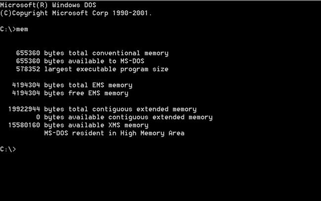
1982 – SunOS
Estado: No disponible.
Código: Cerrado.
Usando BSD como base, Sun Microsystems creo su propio sistema operativo. El software fue desarrollado para ser comercializados junto con los servidores y estaciones de trabajo creados por la empresa. Duró bastante tiempo y continuaron evolucionando hasta que el desarrollador cambió su nombre a Solaris.
1983 – Apple ProDOS
Estado: No disponible.
Código: Cerrado.
Después de tantos proyectos, Apple lanzó un sistema más profesional. Este nuevo software se basa en el SOS de Apple y tenía algunos problemas que otros sistemas no presentaban. Sin embargo, con el lanzamiento de la suite AppleWorks.
1984 – Mac OS
Estado: No disponible.
Código: Cerrado.
Después de acertar en la interfaz, Apple decidió mantener las cosas simples para el consumidor. Muchos de los comandos que los usuarios tenían “miedo” fueron eliminados y reemplazados con gestos de ratón. Este fue el comienzo de una era de los ordenadores “amigables”. Mac OS (que originalmente tenía el nombre de System) era la base del éxito largo de Apple.
1985 – AmigaOS
Estado: No disponible.
Código: Cerrado.
Apple estaba dominando el mercado de los sistemas operativos, pero AmigaOS entró de cabeza en los negocios con su sistema propietario. Los ordenadores AmigaOS fueron equipados con los procesadores Motorola y eran absolutamente diferente a todo lo que existía. Incluso aun siendo un novato en sus primeras versiones, el sistema ya ofrecía interfaz gráfica. No era mucho para los competidores, pero la carrera fue difícil en aquella época Aunque no fue un éxito en de ventas, AmigaOS existe hoy en día y funciona en máquinas con arquitectura PowerPC.
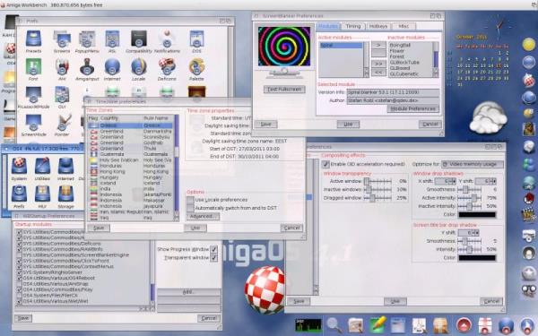
1985 – Windows 1,0
Estado: No disponible.
Código: Cerrado.
Corriendo detrás de los prejuicios, Microsoft lanzó su primer sistema con interfaz gráfica y soporte para múltiples tareas. El software de MS había copiado algunas cosas de los Macintosh, pero era muy diferente en muchos sentidos. Este sistema funcionó en MS-DOS, Pero trajo algunos controladores avanzados para mejorar la usabilidad.
1985 – RISC/os
Estado: No disponible.
Código: Compartido.
Después de varios sistemas basados en Unix, algunos comenzaron a mezclar elementos de códigos base de otro software. El RISC/os, por ejemplo, trajo elementos de BSD y algunas características de UNIX. Este fue uno de los primeros sistemas con arquitectura de 64 bits, pero él sistema no dio mucho de qué hablar y luego fue descontinuado.
1986 – GEOS
Estado: No disponible.
Código: Cerrado.
Mientras pasaban los años, otras empresas han adoptado la idea de sistemas gráficos. GEOS era un software de Berkeley Softworks que había equipado ordenadores Commodore. Ya venía con un procesador y un programa para los dibujos. El último descendiente de este OS apareció en 2009, Pero aún es muy rudimentario.
1986 – LynxOS
Estado: No disponible.
Código: Cerrado.
Tratando de escapar de lo trivial, este sistema llegó a realizar operaciones de procesamiento en tiempo real. En lugar de utilizar datos temporales, LynxOS trabajó para entregar resultados inmediatos. Es un sistema muy común para la aviación, telecomunicaciones, control de procesos industriales y otras actividades.
1987 – MINIX
Estado: No disponible.
Código: Abierto.
Después de tantas versiones de Unix para grandes empresas y los sistemas internos, un hombre llamado Andrew S. Tanenbaum lanzo un software simplificado para fines educativos. El MINIX era una de las inspiraciones para el lanzamiento del aclamado Linux.
1987 – OS/2
Estado: No disponible.
Código: Cerrado.
Después del MS-DOS y de Windows, Microsoft e IBM estaban considerando lanzar un sistema más evolucionado. El Operating System/2 contó con una interfaz gráfica más avanzada. Fue creado especialmente para los nuevos ordenadores IBM y después de algún tiempo, Microsoft salió el proyecto.
1987 – Windows 2.0
Estado: No disponible.
Código: Cerrado.
Mientras daba atención a OS/2, Microsoft trabajaba en paralelo con Windows 2.0. La nueva versión del sistema comenzó a dar unos pasos para llegar a lo que hoy conocemos. Ahora, las ventanas podrían sobreponerse y ya existía las características de maximizar y minimizar de las ventanas.
1988 – A/ROSE y System 6
Estado: No disponible.
Código: Cerrado.
Apple continuó invirtiendo en su sistema, pero el System 6 no fue la mejor jugada. Trajo algunas características poco inteligentes (como MacroMaker utilizado para automatizar actividades) y no mostró gran evolución. Al mismo tiempo, Apple aposto en un sistema que funcionaba en la plataforma coprocesadores de Macintosh. El A/ROSE debería facilitar la introducción del nuevo hardware en los ordenadores de Apple, pero, desafortunadamente, el sistema tenía un montón de problemas.
1989 – NeXTSTEP
Estado: No disponible.
Código: Cerrado. Después de que salió de Apple, Steve Jobs fundó NeXT. Su nueva compañía desarrolló el sistema NeXTSTEP, que fue basado en el código de Unix y BSD. El sistema entró con una interfaz gráfica un dock Apple, 3D, widgets comandos para arrastrar elementos e iconos totalmente coloreados. Este fue el comienzo del sistema OS X.
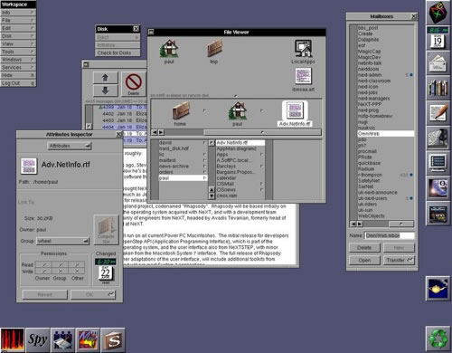
1990 – Windows 3.0
Estado: No disponible.
Código: Cerrado.
Windows 3.0 presentó algunas novedades, principalmente en cuanto a soporte de hardware. Este sistema era capaz de trabajar con los procesadores Intel 8086/8088, 80286 y 80386. Además, era compatible con los adaptadores de gráficos de 256 colores.
1991 – Linux
Estado: Disponible.
Código: Abierto y libre
Finalmente, después de veinte años de historia, nació Linux. Aunque no es el sistema preferido de muchos, el pingüino fue uno de los más importantes en la historia, ya que fue de código libre y abierto. Al principio, el sistema de Linus Torvalds aprovecho las bibliotecas y las aplicaciones de GNU. Lo curioso de este sistema es que no es popular como una única plataforma. Desde el principio, Torvalds distribuyo el Kernel del sistema operativo de forma gratuita, asegurando que varios otros sistemas se pudiesen desarrollar y ofrecer nuevas experiencias para los usuarios. Linux está en constante desarrollo, y su núcleo principal se actualiza para incluir mejoras y nuevas tecnologías. El principal punto culminante de este software es que solamente evoluciono y no necesita estar preocupándose por la interfaz gráfica y otros detalles. En la actualidad, el sistema está en la versión 3.11.
1991 – System 7
Estado: No disponible.
Código: Cerrado.
El lanzamiento de System 7 (o Mac OS 7) fue un paso importante en la historia de Apple. Este sistema ya vino consolidado y agrego toda una serie de nuevas características para el usuario. Gracias a la evolución de los componentes de hardware y periféricos, este software hizo un llamamiento a los consumidores. Fue el primer sistema de la Apple en estar disponible en CD.
1991 – BeOS
Estado: Disponible como Haiku.
Código: Cerrado.
Pensando en las posibilidades de exploración de archivos multimedia y de trabajar con imágenes y vídeos, se desarrolló el BeOS. El sistema de BeOS vino para competir directamente con Windows y Mac OS. Así como sus competidores, también trabajó con ventanas, menús y otras características. El proyecto se terminó, pero todavía está disponible como Haiku.
1991 – Workplace OS
Estado: No disponible.
Código: Cerrado.
De vez en cuando, IBM intentó crear nuevos sistemas para sus equipos. Esta vez, la empresa apostó por una plataforma para ejecutar casi todo. Workplace OS era capaz de ejecutar programas de DOS OS/2, AIX, Windows y otros. Estaba basado en la arquitectura PowerPC y trajo parte del código de UNIX. Se suspendió debido al pobre rendimiento y poca aceptación del público.
1992 – Windows 3.1
Estado: No disponible.
Código: Cerrado.
Windows 3.1 tenía una interfaz de red bien desarrollada, con mejor soporte para archivos multimedia y fuentes TrueType. En sólo dos meses, la versión 3.1vendio 3 millones de copias. Se consolido un sistema operativo muy popular.
1992 – Solaris
Estado: Disponible.
Código: Cerrado.
Dando continuidad a SunOS, Sun Microsystems lanzó Solaris. El nuevo sistema también estaba basado en UNIX, y para continuar su idea original, Sun continuó centrándose en servidores y estaciones de trabajo. Así como los otros sistemas, Solaris ofrece una interfaz gráfica de usuario y un entorno de trabajo evolucionado.
1993 – Debian
Estado: Disponible.
Código: Abierto y Libre.
Dos años después del nacimiento de Linux, uno de los sistemas más grandes de todos los tiempos. Debían vino con ambos pies sobre el pecho de las empresas gigantes, mostrando todo lo que los pingüinos podían ofrecer. El sistema del proyecto Debían reunía el Kernel de Linux (una adaptación de una versión anterior conocida como SLS) y las herramientas de GNU. Uno de los aspectos más destacados fue el soporte para diferentes arquitecturas. Debía funcionar en X86, X64, PowerPC, SPARC, ARM, S390 y IA-64. Debido a la versatilidad, el sistema tuvo a muchos descendientes, incluyendo Ubuntu. Actualmente, tiene una base de datos gigante y puede adaptarse fácilmente a cualquier necesidad. Es uno de los sistemas Linux más utilizados.
1993 – FreeBSD, NetBSD
Estado: Disponible.
Código: Abierto.
En aquella época, la carrera de los sistemas operativos era cada vez más loca. Todos tenían nuevas ideas y querían entrar en el mercado. En 1993, Berkeley Software Distribución lanzó NetBSD, y la compañía The FreeBSD Project puso a disposición FreeBSD. Los dos sistemas todavía existen y son gratis.
1993 – Slackware
Estado: Disponible.
Código: Abierto.
Al mismo tiempo con Debían, nació otra gran versión de Linux. Slackware también se basó en el SLS y el Kernel de Linux. Vino a ofrecer facilidad con algunos scripts. Teniendo en cuenta el tiempo de evolución, Esta distribución también tiene una enorme base de datos y también ha tenido a muchos descendientes.
1994 – Copland (System 8)
Estado: Disponible.
Código: Cerrado.
La octava versión del sistema de Apple trajo más seguridad y mejoro el sistema multitarea. Sin embargo, el software tuvo una vida muy corta, ya que Apple adquirió NeXT y pronto comenzó a trabajar en un nuevo sistema.
1995 – Windows 95
Estado: No disponible.
Código: Cerrado.
Windows 95 era tan importante que terminó definiendo algunos estándares. Se organiza la forma en el escritorio, que todavía se utiliza en Windows 7 y 8, el menú de inicio (que sólo fue quitado en la última versión de Windows), la barra de tareas y el explorador de Windows han sido las características que facilitaron el uso del sistema. Después de algunas actualizaciones, Windows 95 pasó a soportar la lectura de los dispositivos USB, el navegador de Internet Explorer (que nunca salió de sistema de Microsoft) y otras funciones. Este sistema fue responsable de hacer Windows el sistema más utilizado en el mundo.
1996 – Rhapsody
Estado: Disponible.
Código: Cerrado.
Mientras trabajaba en NeXTSTEP, Apple decidió lanzar un sistema intermedio para adaptarse a sus usuarios. Rhapsody era un software adaptado de OPENSTEP y tenía una interfaz muy similar al Mac OS. Su vida no fue tan corta, porque la empresa se tomó un tiempo en el lanzamiento de OS X.
1997 – Symbian
Estado: Disponible.
Uno de los primeros sistemas móviles fue Symbian. Este sistema equipo a un gran número de teléfonos móviles de Nokia y de otros fabricantes. Durante más de diez años, el software fue actualizado para dar cabida a las últimas tendencias. El sistema terminó muriendo (pero todavía tiene soporte) en las manos de Nokia.
1998 – Windows 98
Estado: No disponible.
Sustituyendo a Windows 95, la nueva versión del sistema operativo de Microsoft también era capaz de ejecutar programas de 16 y 32 bits. Sus principales diferencias eran el soporte nativo para dispositivos USB y drivers más avanzados. Además, venía con DirectX 5, que garantizaba la ejecución de juegos más avanzados.
1999 – Windows 98 SE
Estado: No disponible.
Código: Cerrado.
Como su nombre indica, llegó la segunda edición de Windows 98 para corregir los fallos de su precursor. Se llevaron a cabo las mejoras en la comunicación de red, soporte para controladores y actualización de DirectX.
1999 – Yellow Dog Linux
Estado: Disponible.
Aunque es desconocido por muchos, Yellow Dog Linux es un sistema gratuito de código abierto que está bien vivo. Esta versión del pingüino es exclusiva para PowerPC. Utiliza mucho de Red Hat y trae algún software instalado por defecto.
Debido a su arquitectura, el sistema le hace falta utilizar versiones alternativas de Flash y otros programas. Esto también fue uno de los pocos sistemas Linux que funcionó a la perfección en la PlayStation 3. La versión más reciente, lanzada en el 2012, todavía tenía el Kernel 2.6 de Linux.
2000 – Windows 2000
Estado: No disponible.
Código: Cerrado.
Desarrollado especialmente para clientes y servidores de red, Windows 2000 (NT 5.0) soportaba el sistema de archivos NTFS 3.0, sistema de encriptación de archivos y otras funciones avanzadas. Fue reemplazado por Windows 2003.
2000 – Windows ME
Estado: No disponible.
Código: Cerrado.
Microsoft había estado acertando con sus apuestas, pero también demostró que podía dar grandes meteduras de pata. Windows ME fue el sistema con la mayor cantidad de errores que lanzó la compañía. Además de ser lento, se centró sólo en algunos recursos visuales que no ayudaban al sistema a mantenerse vivo durante mucho tiempo.
2000 – Knoppix
Estado: Disponible.
Entre tantas versiones de Linux, Knoppix ha recibido cierta atención en el momento de su lanzamiento. Basada en Debían, el sistema ha llegado a ofrecer los recursos del sistema libre sin la necesidad de realizar una instalación. Solo hacía falta poner el CD de Knoppix en el PC y empezar a disfrutar de un Linux muy ligero.
2001 – Windows XP
Estado: No disponible (Soporte disponible solo hasta el 2014).
Código: Cerrado.
Debido al desastre de Windows ME, Microsoft lanzo Windows XP. Esto fue probablemente el sistema más utilizado por todos. Este S.O. Tenia su interfaz totalmente rediseñada, traía una serie de nuevas características para las redes, DirectX 8.1, soporte para múltiples usuarios, nuevas características de seguridad y mucho más. Este sistema ha tenido muchas actualizaciones.
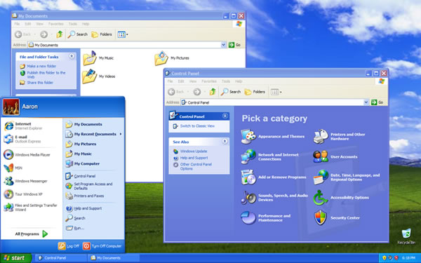
2001 – OS X
Estado: No disponible.
Código: Cerrado.
Después de tantos años trabajando en su propio sistema, Apple ha lanzado finalmente un sistema basado en UNIX. OS X vino a revolucionar la historia de la compañía. Desde el lanzamiento de este sistema, la manzana viene sólo realizando mejoras y no lanzó una versión completamente nueva.
Mac OS X, así como fue llamado, presentó la memoria protegida, el dock (similar a lo que se utiliza hoy en día), la terminal, un cliente de correo electrónico, soporte para OpenGL y otros recursos.
2003 – Kurumin
Estado: Descontinuado.
Arquitectura: X86 y X64.
Código: Abierto.
Kurumin. El sistema creado por Carlos e. Morimoto fue creado basado en Debian y aprovecho la característica de funcionamiento directo por el CD (algo que fue introducido por Knoppix).
Además de esta funcionalidad, Kurumin era famoso por traer algunas funciones automáticas. El sistema tenía “ClicaAki” (el Panel de Control de Kurumin), que, en realidad, era una tienda simplificada que bajaba e instalaba programas que en pocos clics.
Desafortunadamente, Kurumin se discontinuó en 2009. La última versión del sistema fue la NG 8, que fue basada en Ubuntu 8.
2004 – Ubuntu
Arquitectura: i486, x86, x64 y ARM.
Estado: Disponible.
Actualizaciones en desarrollo.
Código: Abierto y gratuito.
Después de 13 años de la invención de Linux, nace el sistema que, hoy, es el más popular con la cara del pingüino. Basada en Debian, este sistema dejo las cosas más amigable para el usuario. Ubuntu recibe dos actualizaciones anuales y ha mejorado el soporte para los más variados tipos de hardware (incluyendo AMD y NVIDIA).
2004 – Mac OS X Tiger
Arquitectura: IA-32, x86, x64 y PowerPC.
Estado: Disponible.
Código: Cerrado (con componentes de código abierto).
Este fue el primer sistema de Apple para los procesadores Intel. En cuatro años de desarrollo, Apple agregó a su sistema las siguientes características: tablero de instrumentos, carpetas inteligentes, Spotlight y otras herramientas.
2006 – OpenSUSE
Arquitectura: IA-32, x86, x64 y PowerPC.
Estado: Disponible.
Código: Abierto y gratuito.
2006 – Windows Vista
Arquitectura: IA-32, x86 y x64.
Estado: Disponible.
Código: Cerrado.
Tratando de innovar, Microsoft termino dando otro error. Windows Vista llegó para crear una nueva experiencia y atraer a los usuarios de Windows XP. Pero por cuenta de una serie de problemas de rendimiento, el sistema no consiguió el éxito en la misión. A pesar de esto, Algunas de las características (como Windows Search y Windows Aero) fueron las innovaciones que han ayudado en el desarrollo del sistema sucesor.
2007 – iOS
Arquitectura: ARM y propietarias.
Estado: Disponible.
Actualizaciones en desarrollo.
Código: Cerrado.
La gran revolución en el mercado de telefonía móvil se produjo cuando Apple lanzó el famoso iPhone. En el momento, no había nada similar al teléfono inteligente y el sistema de Apple. iOS fue creado basado en OS X e introdujo en el mundo de características fáciles de usar. Recientemente, el sistema experimentó un cambio de imagen visual y sigue dando grandes pasos en la introducción de nuevas características.
2008 – OpenSolaris
Arquitectura: SPARC, IA-32, x86, x64, PowerPC, System z on z/VM y ARM.
Estado: No disponible.
Código: Abierto y gratuito.
2008 – Android
Arquitectura: ARM, x86, MIPS y i.MX.
Estado: Disponible.
Actualizaciones en desarrollo.
Código: Abierto (con drivers propietario).
Previamente desarrollado por Android Inc. Android fue adquirida por Google en 2005. Desde entonces, el gigante de las búsquedas estaba trabajando para conquistar el mercado móvil. Hoy, Android es el sistema de transporte más utilizado en el mundo, siendo que está ganando protagonismo por ser el pionero en el lanzamiento de varias características. La última versión es la 4.3, que ya trae soporte para Open GL ES 3.0.
2009 – WebOS
Arquitectura: ARM.
Estado: Disponible.
Código: Cerrado.
2009 – Windows 7
Arquitectura: IA-32, x86 y x64.
Estado: Disponible.
Código: Cerrado.
Considerando la decepción de Windows Vista, Microsoft decidió apostar nuevamente. Windows 7 viene a arreglar todos los problemas del precursor y ofrece un rendimiento por encima de todo. El sistema no alcanzo la popularidad que Windows XP tenía, pero logro conquistar al público.
2009 – Mac OS X Snow Leopard
Arquitectura: x86 y x64.
Estado: Disponible.
Código: Cerrado (con componentes de código abierto).
A diferencia de las versiones anteriores de Mac OS X, Snow Leopard vino a mejorar la programación del sistema básico. Finder y Safari eran más rápidas y el sistema presentó respuestas inmediatas. Parte de esta evolución fue el fin de soporte para la arquitectura PowerPC.
2010 – Windows Phone
Arquitectura: ARM.
Estado: Disponible.
Código: Cerrado.
Después de largos años de insistencia con Windows Mobile (que era sólo un sistema mal adaptado de la versión para escritorio), Microsoft ha rediseñado su sistema móvil. Windows Phone tiene iconos grandes, tiles, un diseño muy limpio y compatibilidad con API modernas para correr juegos en 3D.
2010 – Bada
Arquitectura: ARM.
Sustituido por el S.O. Tizen.
Código mixto: (abierto y propietario).
Cansado de utilizar sistemas genéricos, Samsung intentó crear uno para la línea especial de electrodomésticos. La idea no era muy buena y el fabricante coreano cada vez más viene apostando en Android. El sistema fue descontinuado para centrarse en el desarrollo de Tizen.
2011 – Chrome OS
Arquitectura: x86 y ARM.
Estado: Disponible.
Código: Abierto.
Recursos en la nube.
Después de haber conquistado los dispositivos móviles, Google vio un hueco en el mercado de escritorio. En lugar de insistir en la computación local, la empresa creó un software que utiliza los recursos en la nube. El Chrome OS es desarrollado por Google y está disponible en los Chromebooks, pero hay una versión de código abierto llamada Chromium OS que puede ser probado en otros ordenadores.
2011 – Mac OS X Lion
Arquitectura: x86 y x64.
Estado: Disponible.
Código: Cerrado (con componentes de código abierto).
Aprovechando algunas de las características de iOS, Apple ha desarrollado el sistema para computadores. En Lion, el Launchpad fue uno de los grandes recursos que facilitó el acceso a las aplicaciones. Otra novedad fue el guardado automático del estado del ordenador y de los documentos.
2012 – Tizen
Arquitectura: x86 y ARM.
Estado: Disponible.
Código mixto (abierto y propietario).
Después de intentar luchar en el sector de los móviles con Bada, Samsung decidió apostar en un proyecto más atrevido. Desarrollado en colaboración con Intel y la Foundation Linux, Tizen promete ofrecer un buen rendimiento, compatibilidad con aplicaciones Android y una agradable interfaz.
2012 – Windows 8
Arquitectura: x86, x64, IA-32 y ARM.
Estado: Disponible.
Actualizaciones en desarrollo.
Código: Cerrado.
Pensando en migrar para el sector de las tabletas y revolucionar la forma en que las personas usan el PC, Microsoft ha apostado por un rediseño de su sistema. Aprovechando los elementos de Windows Phone, el nuevo Windows 8 trajo un nuevo menú de inicio. Además mantiene la compatibilidad con programas antiguos y trae soporte para nuevas aplicaciones.
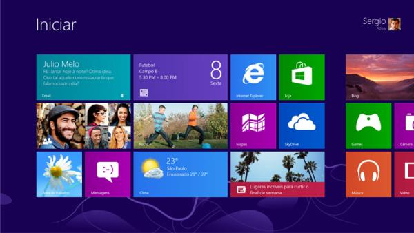
2013 – Ubuntu Touch
Arquitectura: x86 y ARM.
Estado: En desarrollo.
Código: Abierto.
Así como Microsoft, Apple y Google, el equipo de Ubuntu ha decidido también crear su propio sistema para smartphones y tabletas. Ubuntu Mobile OS (también conocido como Ubuntu Touch) ha impresionado con sus características innovadoras y visuales que pueden garantizar experiencias similares entre diferentes dispositivos. El sistema debe ser liberado muy pronto.
2013 – Firefox OS
Arquitectura: ARM.
Estado: En desarrollo.
Código: Abierto.
Después de tantos años trabajando con los navegadores, Mozilla entra en cabeza del mercado de la telefonía móvil. Firefox OS es un sistema enfocado a HTML5 que pretende ganarse a los consumidores que buscan smartphones más baratos.
2013 – Xbox OS
Arquitectura: x86.
Estado: En desarrollo.
Código: Cerrado.
Adoptando parte del código de Windows, Xbox OS será el sistema que tendrá la Xbox One. Todavía no hay ningún detalles precisos sobre el software de este videojuego, pero se sabe que va a tener su código concentrado en la implementación de Direct3D y las características especiales de la consola.
2013 – Orbis OS
Arquitectura: x86.
Estado: En desarrollo.
Código: Cerrado.
Terminando nuestro artículo, tenemos otro sistema operativo para videojuegos. Aunque no está aún disponible para el público, ya tenemos algunos detalles sobre Orbis OS. El sistema de la PlayStation 4 estará basado en FreeBSD y ofrecerá herramientas increíbles adaptadas para los juegos, la edición de vídeos y la conexión web.
2015
1 Jun 15
El primero de junio de 2015, la aplicación Obtener Windows 10 (GWX) fue activado en los dispositivos Windows que ejecutan versiones idóneas para actualizar, y compatibles con, Windows 10. A través del icono en la barra de tareas, el usuario puede acceder a una aplicación que promociona Windows 10 y la oferta gratuita de actualización, comprueba la compatibilidad del dispositivo y permitea los usuarios «reservar» una descarga automática del sistema operativo en el día de su lanzamiento. El 28 de julio, un proceso de pre-descarga se inició, en el cual los archivos de instalación de Windows 10 se descargaron en algunos equipos que habían reservado la misma.
2015
29 Jul 15
Fue lanzado Windows 10, SO desarrollado por Microsoft como parte de la familia de sistemas operativos Windows NT. Fue dado a conocer oficialmente en septiembre de 2014, seguido por una breve presentación de demostración en la conferencia Build 2014.
También se introduce la Vista de Tareas, un sistema de escritorio virtual, el navegador web Microsoft Edge y otras aplicaciones nuevas o actualizadas, un soporte integrado para iniciar sesión a través de huella digital o reconocimiento facial llamado Windows Hello, nuevas características de seguridad para entornos empresariales, DirectX 12 y WDDM 2.0 para mejorar las capacidades gráficas del sistema operativo para los videojuegos.
2015
12 Nov 15
El 12 de noviembre de 2015 Microsoft dio a conocer un "Update noviembre" para Windows 10 (también conocido como "Umbral 2", "TH2", "versión 1511, build 10586" y "build 10.586,3"). La actualización ha estado en desarrollo desde agosto de 2015 y contiene numerosas mejoras más que la primera versión para el público de Windows 10 (10240). Las nuevas características incluyen la capacidad de agregar una cuarta columna para el menú de inicio, la restauración de la capacidad de aplicar los colores de acento para las barras de título, menús de contexto mejorados, numerosas mejoras en Microsoft Edge y la capacidad de utilizar una clave de producto de Windows 7, 8, u 8,1 para activar Windows 10. Nuevas aplicaciones incluidas en esta actualización son la mensajería, teléfono, vídeo de Skype, y Xbox beta (no debe confundirse con la Xbox app). La actualización de noviembre fue programada para lanzarse junto con la nueva Xbox One Experience (NXE).
2016
Approx. Jul 16
Windows 10 Redstone 1 será la primera gran actualización de Windows 10, fue anunciada en abril de 2015, y comenzó su desarrollo en octubre de 2015. Posiblemente su lanzamiento sea en dos etapas, una en la temporada de verano de 2016 que se concentrará mayormente en mejorar el núcleo compartido de Windows (OneCore), en la plataforma universal de Windows o UWP, con lo que la Windows Store incluirá la tienda de Xbox One y Xbox 360 y la llegada de más aplicaciones del Proyecto Centennial e IslandWood hacen parte del paquete que vendrá con la actualización. Continuum también será un punto focal grande en esta actualización, se podrá realizar la sincronización de mensajes de texto y llamadas, lo que permitirá a los usuarios hacer llamadas telefónicas desde su teléfono directamente en su PC. Su rama de compilación es rs1_release. La primera compilación fue lanzada el día 16 de diciembre de 2015 para el anillo rápido del programa Insider con el número de compilacíón 10.0.11082
En la conferencia //Build/ del año 2016, organizado por Microsoft , este ha anunciado la "Actualización de aniversario" para Windows 10 y todo su entorno, este nombre se ocupará para mencionar a esta actualización.
2016
26 Oct 16
La nueva actualización de Windows 10 (denominada oficialmente Creators Update, y con nombre código "Redstone 2" (RS2)), fue oficialmente anunciada el 26 de octubre de 2016. La rama se centra principalmente en la creación de contenidos, productividad, y funciones de juego con un particular enfoque en la realidad virtual y en la realidad aumentada (incluyendo HoloLens y gafas de realidad virtual) y en facilitación de la creación de contenidos en tres dimensiones. Se espera que sea lanzado a principios de 2017.
Se introduce una versión renovada de Microsoft Paint como UWP conocido como Paint 3D. También habrá un espacio de trabajo de realidad virtual diseñado para su uso con dispositivos de realidad virtual; Microsoft anunció que varios fabricantes de equipos OEM estaban planeando lanzar dispositivos de realidad virtual diseñados para su uso con la actualización. Se añadirá la integración con Beam.pro, adquirida por Microsoft, para la transmisión de videojuegos en Windows 10. Una nueva característica conocida como "My People" mostrará accesos directos a contactos "importantes" en la barra de tareas; con notificaciones en las que aparecerán con su respectiva imagen, en la que los usuarios pueden comunicarse con el contacto a través de Skype, correo electrónico o mensajes de texto (integración con Android y dispositivos con Windows 10 Mobile ). Con soporte para servicios adicionales, incluyendo Xbox, Skype para empresas, y la integración de terceros, que se añadirá en el futuro. Los archivos también se pueden arrastrar directamente a la imagen del contacto para compartirlos al instante.
2017
11 Apr 17
Lanzamiento oficial de la última versión de Windows 10, llamada Creators Update.
Linea del tiempo de los sistemas operativos
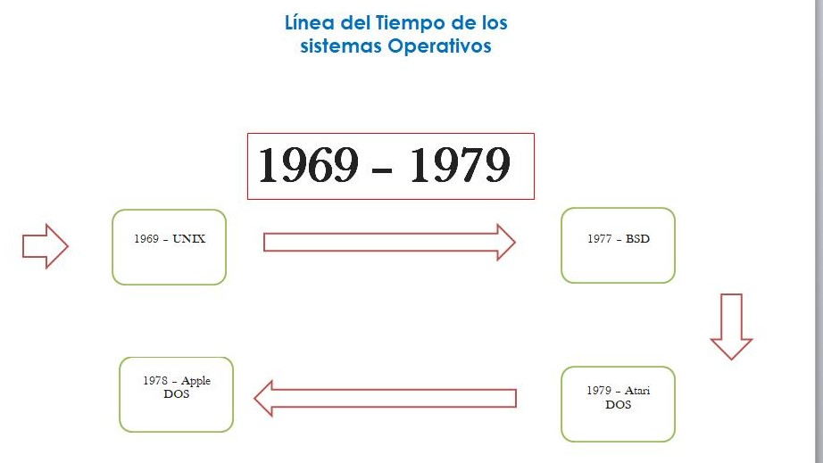
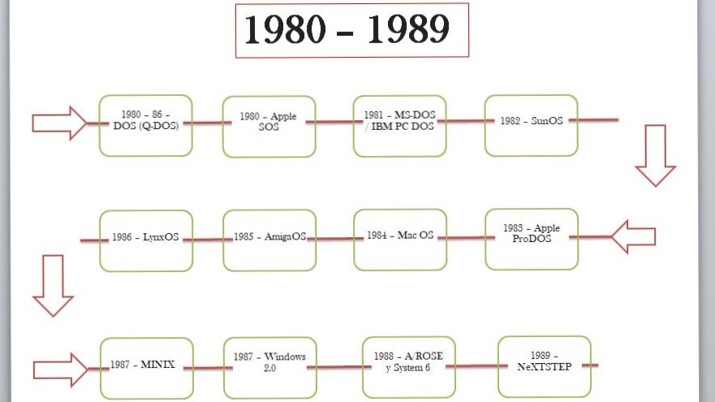
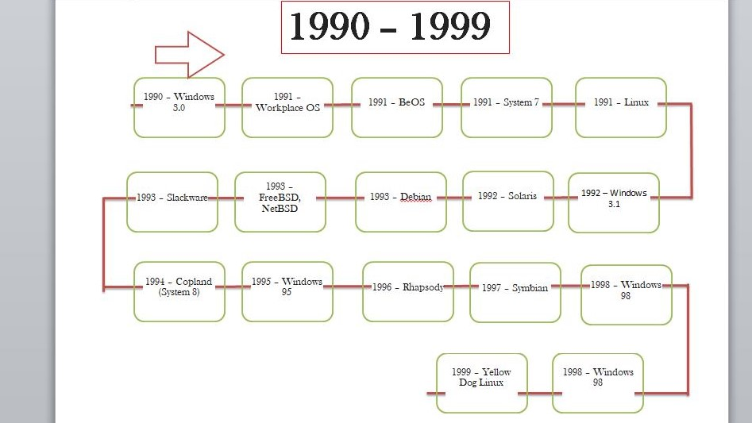
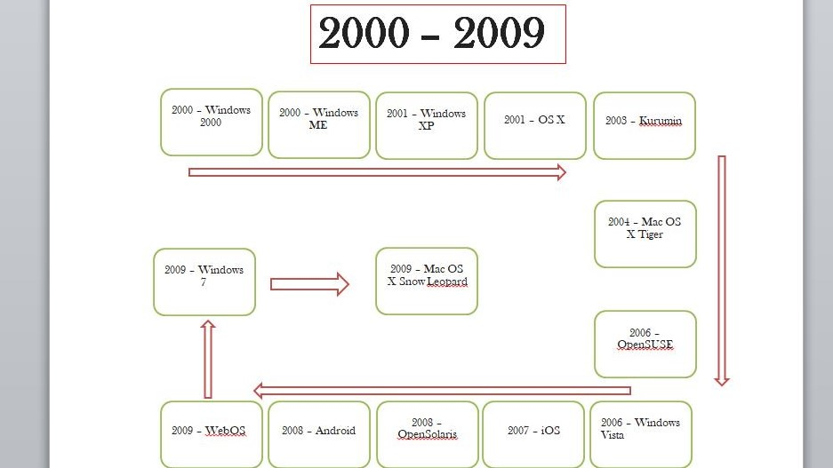
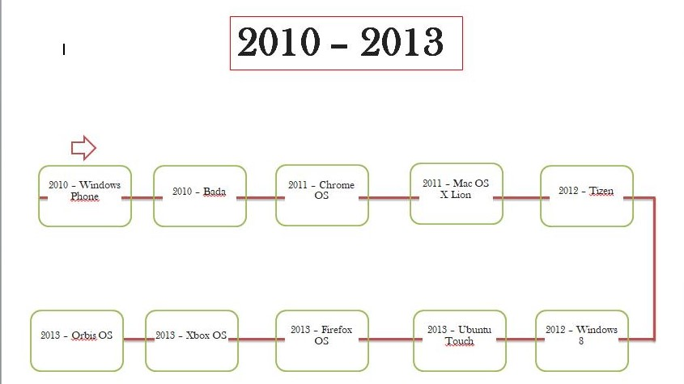
Media de los años desde la creacion hasta el actual
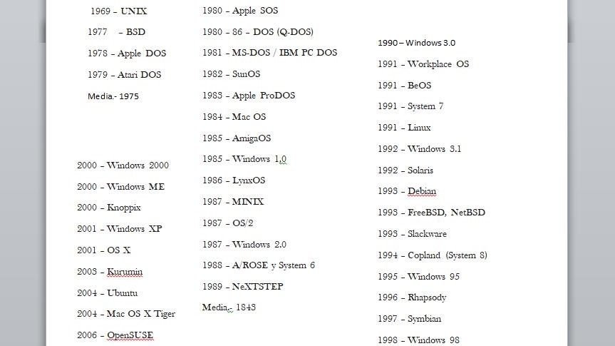

¿Cómo hacer una gráfica con la media?
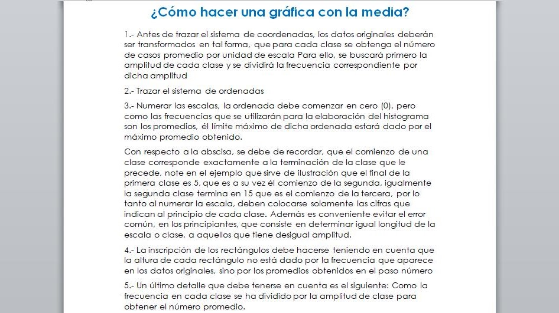
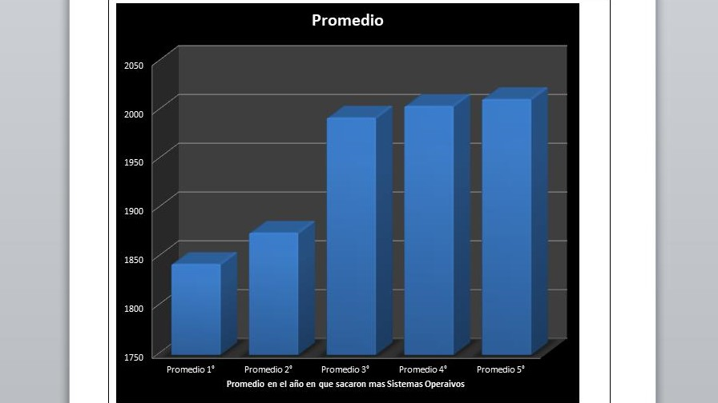